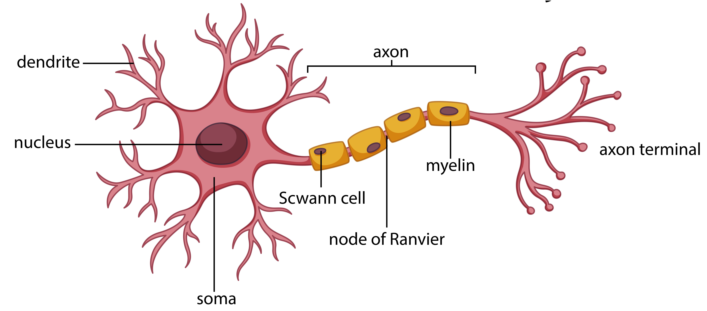

# KI in Mathematik ---- ### Teil 1: - Wie funktionieren Neuronale Netze und Vector Embedding - Wie kann ich das im Mathematik Unterricht einsetzen ### Teil 2: - Prompt Engineering ---- ### Ziele - Grobes Verständnis von Neuronalen Netzen und Vector Embedding und der Mathematik im Hintergrund - KI als Beispiele für die Themen des Mathematikunterrichts nutzen - Eigene Unterrichtsmaterialien mit KI erstellen --- # Was ist KI? ---- - Der Begriff "Künstliche Intelligenz" wurde 1956 von John McCarthy geprägt; wichtige Vorarbeiten leistete Alan Turing (1950). - KI ist ein Teilgebiet der Informatik, das darauf abzielt, Systeme zu entwickeln, die Aufgaben übernehmen können, die normalerweise menschliche Intelligenz erfordern — z. B. Lernen, Planen, Schlussfolgern und Problemlösen. - Wichtige Teilgebiete: Robotik, Expertensysteme, Sprach- und Textverarbeitung (NLP), Computer Vision, Machine Learning (ML) und Deep Learning (DL). ---- <img src="img/ai-ml-dl.png" alt="Picture" width="500"> ---- ### Artificial Intelligence (AI) - KI umfasst alle Technologien und Methoden, die darauf abzielen, Maschinen menschenähnliche Intelligenz zu verleihen. - sehr vage Definition - was ist "Intelligenz"? ---- ### Machine Learning (ML) - Computer entwickelt Algorithmen nicht nach festen Regeln, sondern durch das Erkennen von Mustern in Daten. - Einfaches Beispiel: **Lineare Regression** ---- ### Deep Learning (DL) - Teilgebiet des Machine Learnings, das auf künstlichen **neuronalen Netzen** basiert. --- # Neuronale Netze ---- ### Inspiration - Biologische Neuronen im menschlichen Gehirn  ---- # Hallo ---- ### Künstliches Neuron <img src="img/neuron2.png" alt="Picture" width="800"> <p style="font-size:0.5em; margin-top:0.5em;">Quelle: <a href="https://methpsy.elearning.psych.tu-dresden.de/mediawiki/index.php/Neuronale_Netze" target="_blank" rel="noopener">TU Dresden</a></p> ---- ### Mathematik im Neuron - Gewichtete Summe - Aktivierungsfunktion - nicht **linear** $$ \text{Output} = \sigma\left(\sum_{i=1}^{n} w_i \cdot x_i\right) $$ ---- ### Aktivierungsfunktion - durch Aktivierungsfunktionen kann Linearität verhindert werden - bringt meinen Output in ein vorgegebenes Intervall - Es gibt verschiedene: - Sigmoid - RELU - Softmax - ... ---- #### Beispiel Sigmoid Funktion $$ \sigma(x) = \frac{1}{1 + e^{-x}} $$ <img src="img/sigmoid.png" alt="Picture" width="600">